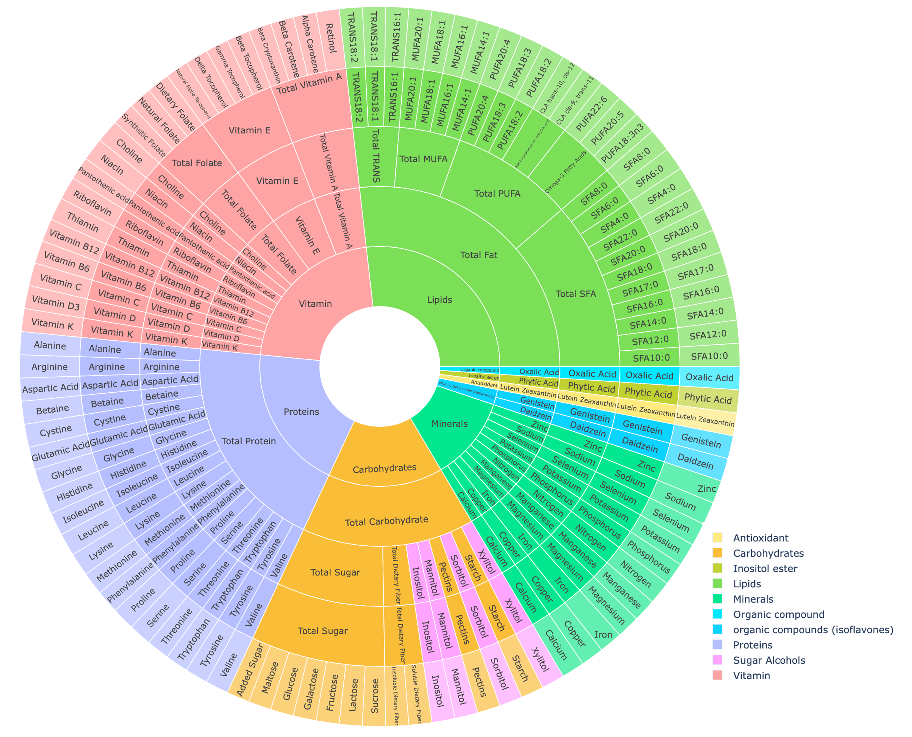
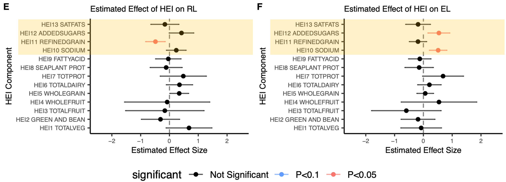
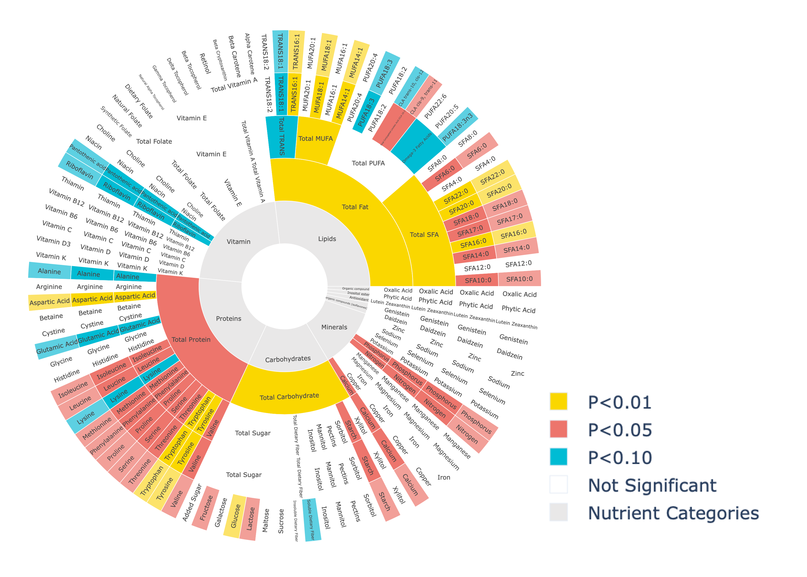
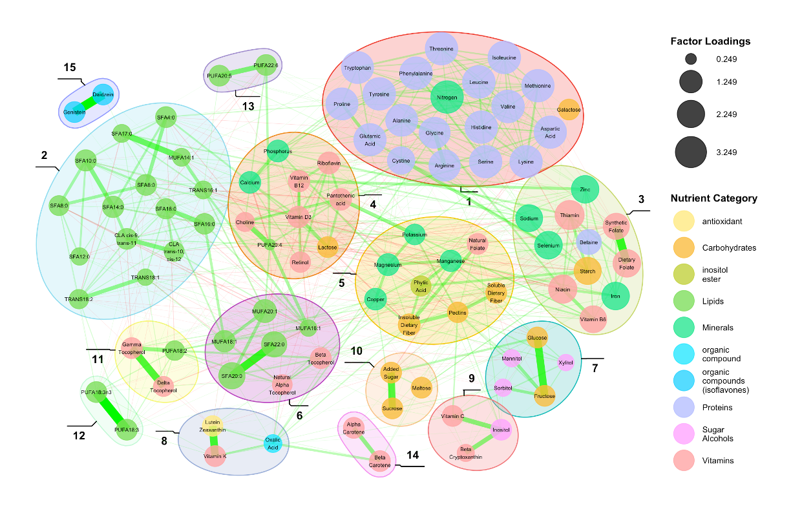

Analysis on the Association between Nutrient Intakes and Cognitive Function During Early Childhood
This project aimed to uncover the relationship between nutrient intake during early childhood and cognitive development, a critical period where the brain grows to 80-90% of its adult size. Recognizing that enriched environments and proper nutrition are pivotal for positive brain development, our study sought to comprehensively explore dietary impacts on cognitive functions in children aged 1-3 years. The research employed a multifaceted approach, assessing dietary quality, individual nutrients, and deriving novel dietary patterns to understand their association with cognitive growth. The approach was further extended to discover the effects of nutritional dietary intake on temperament development.
Learn More About My
Data Analysis Methodology
The analysis began with organizing a vast dataset and progressed through building various statistical models to decode the association between nutritional intake and cognitive functions from various perspectives. The methodology unfolded as follows:
Exploratory Analysis: Initially dealing with 168 nutrient features, we refined this to 157 after excluding those with excessive zeros. Given the complexity of the dataset and the modest sample size (approximately 200 observations and 100 subjects in each age bin), direct analysis using all nutrients was impractical due to high dimension relative to sample size and high correlation among many nutrients (see Figure 1).
Figure 1. Correlation matrix heatmaps of nutrients in dataset. The blue color represents a positive correlation, while the red color means a negative correlation.
Dimension Reduction Strategy: To manage the high dimensionality, we opted for dimension reduction, achievable through feature selection or extracting latent features. XGBoost played a crucial role in this phase, enabling feature selection via its feature importance scores. This step was crucial for narrowing down the focus to the most significant nutrients for further analysis. It also uncovered the potential significance of some nutrients not initially scoped as of interest by our collaborative research teams, providing valuable insights. However, this approach had its limitations, potentially overlooking the comprehensive interplay of nutrients on cognitive development due to the narrowed focus.
Comprehensive Analytical Approaches: Aiming to capture a holistic view of dietary impacts on cognitive development, we implemented the analysis in three parts, each utilizing linear mixed-effect models to estimate and identify significant associations between nutritional intake features and cognitive functions:
Index-based Approach: This method evaluated dietary quality using Healthy Eating Index (HEI) scores, providing a straightforward assessment based on dietary guidelines.
Univariate Approach: Focused on the impact of individual nutrients on cognitive functions, this approach allowed for the examination of specific nutrient effects in isolation. Given the hierarchical structure of the nutrients reported by NDSR, they were grouped into four layers of analysis (see Figure 2).
Figure 2. Traditional univariate method nutrient classification using a hierarchical structure. The outer most circle displays the nutrient that could not be further subdivided into lower-level constituents. The Layers 2, 3, and 4 nutrients are presented in the 2nd, 3rd and 4th circles. The most inner circle indicates the nutrient category of the nutrients in Layer 4. The color distinguishes every nutrient in all layers according to their nutrient categories.
Data-driven Approach: Adopted without strong prior assumptions, this method utilized machine learning (EGA - Exploratory Graph Analysis) and factor analysis (CFA - Confirmatory Factor Analysis) methods to uncover patterns and associations that might not be immediately apparent, offering a holistic view of dietary impacts on cognitive development.
This structured analysis approach ensured a thorough exploration of the dataset from multiple perspectives, aiming to capture the nuanced effects of dietary intake on early cognitive growth.
Browse My
Results and Data Visualization
The project concluded with significant findings on how specific dietary patterns influence cognitive development. Meanwhile, the same structured approach was extended to the analysis of the association between nutritional intakes and temperament development during early childhood.
Index-based approach.
Several associations between HEI component scores and the different domains of cognitive functions were observed. We visualized the estimated effect size of HEI components on cognitive functions using forest plot (see Figure 3).
Figure 3. Forest plots illustrating the estimated impact of HEI components on cognitive functions, specifically focusing on receptive and expressive language skills. The x-axis shows the effect size of HEI components on cognitive functions, and the y-axis lists these components. Dots indicate effect sizes, lines show the 95% confidence intervals, and shadowed areas mark moderate components, where higher scores mean lower nutrient consumption.
Univariate Approach.
We utilized circle plots to visualize the significance levels of various nutrients across four layers on fine motor among children aged 12-18 months (see Figure 4, generated using Python).
Figure 4. Circle plots depicting the significance levels of nutrients across four layers using the traditional univariate analysis method, focusing on fine motor skills among children aged 12-18 months. The nutrients displayed are identical to those in Figure 2's circle plot, with colors indicating their significance levels in relation to fine motor cognitive function.
Data-driven Approach.
The estimated EGA results and factor loadings obtained by CFA were depicted using network graphs (see Figure 5).
Figure 5. Network graph showing EGA clustering of nutrients for children aged 1-3 years. Circles denote nutrients, with colors indicating NDSR categories and shading representing classification groups. Circle size reflects nutrient factor loadings obtained from CFA within its group. Lines between circles show nutrient correlations: thickness signifies correlation strength, red indicates negative, and green positive correlations.
Extension to Temperatment as Outcome
The same index-based approach and data-driven approach were extended to analysis of the association between nutritional intake patterns and temperamtent development among children aged 1 and 2 years old.

{kind=link}
{kind=link}
{kind=link}